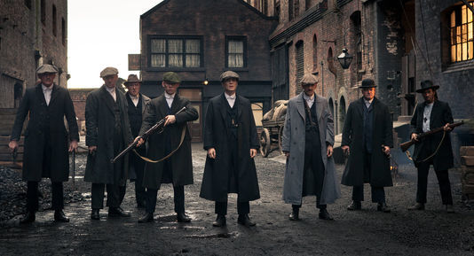

Peaky Blinders

Thomas Shelby dirige l'une des organisations criminelles les plus redoutées de Birmingham :
les Peaky Blinders, surnommés ainsi par rapport à leur utilisation de lames de rasoir cachées dans leurs casquettes.
Avec l'aide de sa tante Polly et de ses frères, Arthur et John,
il a su établir son autorité dans le monde des paris illégaux et de la contrebande.
Lorsqu'il a l'opportunité d'étendre son territoire, son ambition ne connaît plus de limites.
Basée sur l'histoire du gang des Peaky Blinders qui a sévi à la fin du XIXème siècle en Angleterre,
cette série phénomène a été créée en 2013 par Steven Knight et a reçu de nombreuses récompenses dont le
BAFTA de la meilleure série dramatique en 2018.
Dernière nouveauté
Saison 5
Bande annonce de la saison 5 de Peaky Blinders